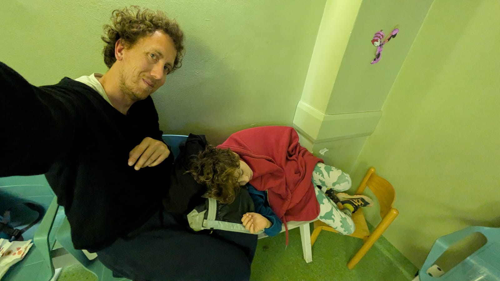

Cronaca di ventiquattro ore di ipoglicemia chetonemica gestita in famiglia — dai primi sorsi di acqua e zucchero alla sala d'attesa del Buzzi — accompagnata da due brevi saggi sulla fisiopatologia e da un protocollo pratico.
La mattina del 7 aprile Diego, nove anni, è già in difficoltà. I genitori — Marco ed Elena — aggiornano via chat i nonni: pochi miglioramenti, qualche pezzetto di pasta e mezzo cracker che il bambino sembra tenere ma che, mezz'ora dopo, rimette. Nessuna febbre, nessun mal di gola. Solo quella nausea ostinata che accompagna la chetosi e che, come vedremo, è il prezzo che il cervello di un bambino paga per proteggersi dal digiuno.
Per tutta la giornata la strategia è quella classica dell'ipoglicemia chetonemica gestita in casa: micro-sorsi di acqua e zucchero, un cucchiaino di miele, pazienza. Alle 17:08 Elena scrive: «Ha vomitato di nuovo ora, dopo venti minuti dallo zucchero». Alle 17:10 Marco aggiunge che il cucchiaino di zucchero era concentrato — «quindi più zucchero» — e che forse qualcosa è stato assorbito prima dell'episodio.
È in questo momento che invio a Marco ed Elena i tre documenti divulgativi preparati in anticipo — fisiopatologia, meccanismo del vomito, protocollo — con l'idea che capire perché sta succedendo aiuti a non spaventarsi e a non cedere troppo presto alla tentazione del pronto soccorso. I sintomi di Diego sono tipici di un'ipoglicemia non grave: siamo quasi certamente sopra i 70 mg/dL.
«Guardate questo protocollo: vedete se qualcuna di queste strategie può funzionare. I suoi sintomi sono tipici di ipoglicemia non grave.»
Verso le 20 la collaborazione del bambino è ai minimi: anche lo zucchero sotto la lingua lo tiene per poco, poi lo vuole sputare — «come se fosse il dolore più grande del mondo», scrive Marco. Al terzo cucchiaino sublinguale, un po' sputato, si registra però una buona notizia: non vomita dalle 19:10. Poi, alle 20:58, la ricaduta.
La famiglia è in trasferta: bisogna rientrare a Milano. Diego si addormenta in auto, si risveglia per vomitare, si riaddormenta. A mezzanotte e dieci sono a casa, ma il micro-sorso offerto finisce anch'esso fuori. La decisione è presa: Marco porta Diego al pronto soccorso del Buzzi.
E così è: glicemia a 120, chetoni nelle urine. Il quadro è coerente, il bambino sta bene, ma per evitare che nelle ore successive si richieda una flebo, il medico del pronto soccorso propone ondansetron — quello stesso farmaco di cui avevo parlato nel file inviato ai genitori. Marco deve firmare per una terapia off-label: in Italia l'ondansetron nel vomito pediatrico da gastroenterite (e, per estensione, da chetosi) resta formalmente off-label, pur essendo ormai on-evidence in tutta la letteratura. È una stranezza regolatoria che non si riesce a superare.
Diego, nelle ore precedenti, ha ricevuto piccole quantità di zuccheri semplici che, parzialmente, sono state assorbite. Il problema non era mai l'ipoglicemia franca (verosimilmente non si è mai scesi sotto 70), ma la chetosi autoalimentante: i chetoni provocano nausea, la nausea impedisce l'assunzione di carboidrati, il digiuno perpetua la chetogenesi. Interrompere quel circolo era l'unico obiettivo reale.
Alle 01:55 l'ondansetron è stato somministrato. Il medico consiglia di aspettare circa un'ora prima di riprovare con i liquidi: suggerisco di non avere fretta, perché con una glicemia di 120 siamo in una fascia tranquilla per almeno una o due ore, e se Diego vomitasse il farmaco la gestione diventerebbe molto più complessa. Padre e figlio si accomodano in sala d'attesa — c'è una foto: Marco semi-sdraiato sulla sedia, Diego raggomitolato accanto a lui, soli e comodissimi nella loro stanchezza condivisa.
Alle 03:37 Marco scrive: stanno bevendo a piccoli sorsi una soluzione zuccherina fornita dal reparto, un cucchiaio ogni cinque minuti, sono a tre cucchiaini. Alle 05:18 la notizia che aspettavamo: usciti. Un bicchiere bevuto, un altro iniziato, dimissione a metà del secondo.

«Usciti! Bevuto un bicchiere. Ce ne hanno dato un altro, ma per fortuna ci hanno dimesso a metà secondo bicchiere.»
La mattina dell'8 aprile si procede piano: reidratante, crackers, pane. Il bambino è «un po' spaventatino», scrive Elena, e vuole fare tutto molto lento. A mezzogiorno e mezzo la risposta alla domanda di Marco — «come va?» — è laconica e sufficiente: «bene 🙂».
Quello che segue è un estratto dei due documenti divulgativi preparati per Marco ed Elena, scritti per un target di genitori con formazione scientifica. La versione integrale — con citazioni puntuali — è disponibile in docs-html/fisiopatologia.html.
I bambini piccoli hanno un cervello proporzionalmente molto più grande di quello adulto: a tre anni il cervello rappresenta circa il 15% del peso corporeo, contro il 2% dell'adulto. Il consumo cerebrale di glucosio per kg di peso è quindi enormemente più elevato. Ecco perché un bambino sviluppa ipoglicemia e chetosi in tempi che un adulto non sperimenterebbe mai.
Studi con isotopi stabili hanno mostrato che, durante il digiuno prolungato, nei bambini con ipoglicemia chetonemica la produzione epatica di glucosio diminuisce del 31,9%, contro il 17,9% dei controlli. La glicogenolisi crolla (le riserve epatiche si esauriscono in 8–12 ore), ma soprattutto la gluconeogenesi compensa in modo insufficiente: aumenta solo del 6,8% contro il 19,5%. È questo il difetto centrale — se di difetto si può parlare: per molti bambini si tratta semplicemente della coda inferiore della distribuzione gaussiana della tolleranza al digiuno.
I corpi chetonici non sono il nemico: sono la risposta salvavita. Il fegato li produce per fornire al cervello un combustibile alternativo quando il glucosio scarseggia, risparmiandolo. Livelli di β-idrossibutirrato superiori a 1 mM abbassano addirittura la soglia glicemica per i sintomi neuroglicopenici da 2,8 a 2,4 mmol/L. È una protezione parziale, ma reale.
La maggior parte dei bambini supera completamente il problema entro i 7–9 anni di età, quando il rapporto cervello/massa corporea si normalizza e le riserve di glicogeno e la massa muscolare aumentano sufficientemente. Diego, a nove anni, è ancora nella coda del fenomeno.
Il secondo documento — integrale in docs-html/vomito-chetosi.html — risponde a una domanda che ogni genitore di un bambino in chetosi si pone prima o poi: perché proprio adesso che avrebbe bisogno di mangiare, non riesce?
Il vomito è coordinato dal centro del vomito nel tronco encefalico, che riceve afferenze da corteccia, sistema vestibolare, tratto gastrointestinale e — qui è il punto — dalla chemoreceptor trigger zone (CTZ) nell'area postrema. L'area postrema è uno degli organi circumventricolari: manca della barriera emato-encefalica. I suoi neuroni assaggiano direttamente il sangue che li perfonde. Evolutivamente è un sistema anti-avvelenamento: qualsiasi alterazione chimica inusuale attiva il vomito per eliminare la possibile tossina.
I corpi chetonici sono acidi organici deboli. Quando le loro concentrazioni plasmatiche superano i 2,5–3 mmol/L, l'acidosi sistemica attiva direttamente i neuroni dell'area postrema, irrita la mucosa gastrica, rallenta lo svuotamento gastrico. Il risultato è un circolo vizioso: chetoni → vomito → impossibilità di assumere carboidrati → digiuno → più chetoni.
I corpi chetonici sono simultaneamente salvatori — perché nutrono il cervello — e attivatori del vomito, perché l'area postrema non può distinguerli da una tossina.
Ecco perché l'intervento precoce, prima che il vomito si instauri, è molto più efficace del trattamento tardivo. Ed ecco perché, quando il circolo si è già chiuso, un antiemetico (l'ondansetron, tipicamente) è l'unico modo per spezzarlo senza ricorrere alla flebo.
Riassunto pratico del protocollo che ho inviato a Marco ed Elena alle 17:42 del 7 aprile. Versione integrale con criteri decisionali e note in docs-html/protocollo.html.
0,3 g/kg di glucosio puro — per un bambino di 25–30 kg significa 7,5–9 grammi. In pratica: una compressa e mezzo/due di glucosio, oppure 15–18 g di zucchero da tavola in 100 ml d'acqua, oppure 150–200 ml di succo di frutta, oppure due cucchiai di miele. Nei bambini poco collaboranti ma vigili, un cucchiaino di zucchero in slurry applicato sotto la lingua bypassa il tratto gastrointestinale irritato.
Controllare la glicemia dopo 15 minuti. Se sotto 70, ripetere. Se sopra, alimentazione di mantenimento con carboidrati complessi + proteine (pane o crackers, frutta, yogurt). Obiettivo: 5–10 g di glucosio ogni 2–3 ore nei periodi di malessere intercorrente, evitando digiuni notturni superiori alle 8–10 ore.
Le referenze che seguono sono quelle utilizzate nei tre documenti divulgativi allegati al repository. Sono raggruppate per tema.